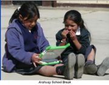
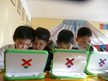
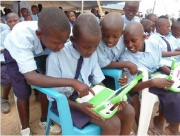

There are several projects initiated by various organizations to narrow the gap between information rich and information poor. They include One Laptop per Child, Raspberry_PI and 50x15.
The OLPC is a U.S non-profit organization that has been set up to provide cheap educational devices for use in the developing world. The organization has developed a laptop known as the XO-1. The X0-1 is also known as "$100 laptop" and Children's Machine, is a cheap subnotebook developed for children in the developing world, to provide them with access to knowledge and give them opportunities to "explore, experiment and express themselves". As of March 2011, OLPC have manufactured laptops for approximately 2 million children around the world. The XO-1 laptops are mainly distributed in the following countries: Uruguay, Peru, Haiti, Rwanda and Mongolia.
“With the laptop we can say that our school is really elevated because the children are really learning more... They see themselves discovering things that they have never been doing before.” — Mrs. M., Galadima School, Abuja, NigeriaClick here to watch a video that shows children from all over world saying thank you to OLPC
| XO-1 in Peru | XO-1 in Mongolia | XO-1 in Rwanda |
|  |  |  |
| Click on image to enlarge | ||
Thanks to this affordable laptop, children in the developing world can now have access to knowledge just like any other children in the developed world. OLPC due its milestones (manufacturing 2 million laptops) has clearly succeeded in closing the gap.
{kind=link}
{kind=link}
{kind=link}